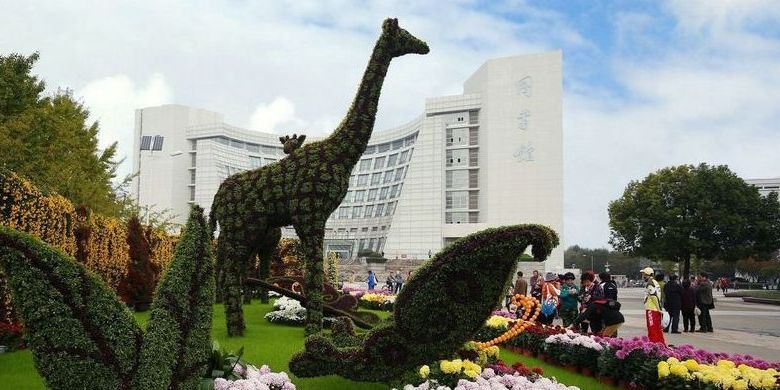

The International Conference on Lie Theory and Representations aims to provide an academic exchange platform for researchers in the field of Lie theory and representations to understand the latest domestic research progress on this field and enhance mutual understanding and collaborations. The purpose of this conference is to promote a deep and systematic understanding of the reported research issues, and to further develop collaborations and communicate with each other.
2019李理论及表示国际会议研讨会旨在为李理论和表示的研究领域的学者提供一个学术交流平台，了解李理论和表示领域的最新研究进展，增强彼此之间的了解与合作。本次会议力求促进大家对所报告的研究问题深入系统的理解，一起开展进一步的合作与交流。
2019李理论及表示国际会议研讨会将于2019年6月22日-6月25日在上海大学举办，其中6月22日注册报到，23日-25日上午学术报告，25下午离会。